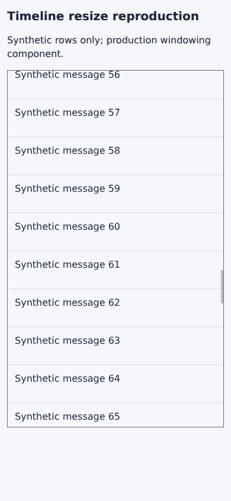
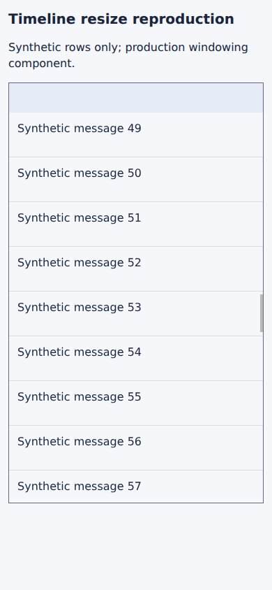
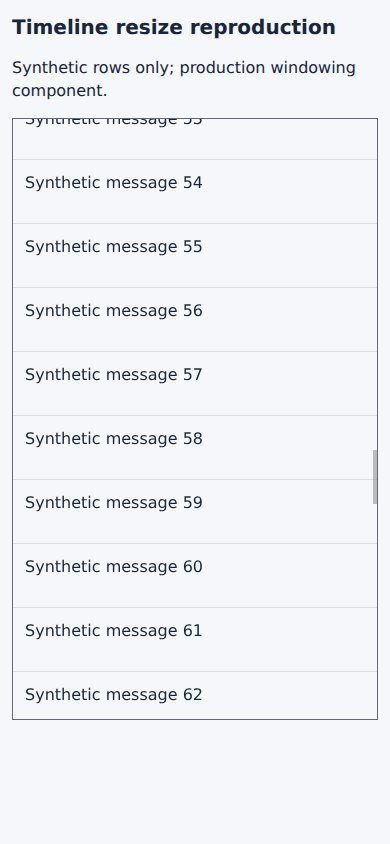

#5435 · Offscreen resize anchoring during backward touch scrolling
Verdict: REPRODUCED · Root-cause confidence: high · reproduction label: confirmed-repro
1. TL;DR
A row that is entirely above the reader changes from a small loading card to larger content. The production timeline shifts every later message but refuses the matching scroll correction when the row was already measured and the reader is scrolling backward. A synthetic fixture using the real React component, the real virtualizer, real browser layout and emulated touch reproduces a 300 CSS-pixel unrequested movement. A second clean checkout repeats that result. Removing only the direction exclusion restores the reading position while leaving the viewport-intersection and iOS guards intact.
2. Claims vs findings
| Claim | Status | Evidence |
|---|---|---|
| A measured offscreen asynchronous resize can disrupt backward touch scrolling. | Verified | Two clean-source browser runs each show a 300-pixel resize without compensation during a downward finger swipe. |
| The cached-row backward-direction exclusion is causal. | Verified | Two focused regression cases fail before the one-line change and pass after it; the same touch gesture no longer moves text by an extra 300 pixels. |
| Unloading and remounting a completed row as loading content can cause the same loss of anchoring. | Verified at component boundary | The lifecycle regression actually unmounts and remounts the row, then delivers a resize notification. It fails on main for a missing 300-pixel shrink correction. |
| The reported third-party plugin version and exact reported numeric delta reproduce here. | Unverified | No third-party source, linked artifact, attachment or script was fetched or executed. The repository-only fixture uses a different 300-pixel height change. |
| Physical phones, trackpads or Safari exhibit the same behavior. | Unverified | Only Linux headless Chromium with emulated touch was used. Production disables this windowing path on iOS WebKit. |
3. Environment
- Trusted public get-bb/bb origin/main at
e9dafb6c0245a37c6972dffa71134d546f3d497e; second clean detached checkout at the same SHA. - Fix branch starts at later trusted main
782353fde8860a7ff488ff5cefab34a821a0c3a3. The production component blob is identical at both commits:41e0ad87446b356deae59143cca6e696d931233c. - Linux; Node 22.19.0; pnpm 9.15.0; lockfile-frozen dependency installs; Vite 8.0.12.
- Headless Chrome 149.0.0.0 through the BB Browser Automation plugin; viewport 390 × 844 CSS pixels, device scale factor 2, mobile and touch enabled. Captures delivered by the plugin are scaled to 390 × 844.
- 100 synthetic rows; scrollport height 600; estimates 64; card row 48 changes from 40 to 340. No agent provider, backend, user database, account data or real thread is involved.
- The browser loads a bundled local HTML file. An initially attempted isolated Vite listener on port 18535 was not used for evidence and is stopped during cleanup. No application data directory was created.
4. Minimal reproduction
- Clone the public repository into a fresh directory, check out the recorded base, and install the frozen dependencies.
git clone https://github.com/get-bb/bb.git bb-5435-repro cd bb-5435-repro git checkout e9dafb6c0245a37c6972dffa71134d546f3d497e pnpm install --frozen-lockfile
- Apply the report-owned regression-only patch; it changes only the existing component test. Do not change production code.
git apply timeline-regression.patch pnpm exec turbo run test --filter=@bb/app -- src/components/thread/timeline/TimelineWindowedItems.test.tsx
- The loading-to-content case measures the 40-pixel loading row, moves backward, then delivers a 340-pixel resize above the viewport. The second case unmounts a 340-pixel row and remounts it with a 40-pixel loading state before restoring its content.
Expected loading-to-content scrollTop: 1836 Actual loading-to-content scrollTop: 1536 Expected remount shrink scrollTop: 1550 Actual remount shrink scrollTop: 1850 Test Files 1 failed (1) Tests 2 failed | 16 passed (18)
- For visual verification, place the three linked fixture files under
apps/app/issue-5435-repro/. Prepare the app dependencies through Turbo, then bundle this deliberately isolated investigation fixture.pnpm exec turbo run build --filter=@bb/app cd apps/app pnpm exec vite build --config issue-5435-repro/vite.config.ts
Inline the generated JS into the supplied HTML, or serve that fixture with Vite on an unused isolated port. The browser script contains the exact emulated touch input and measurements; set its file URL to your own clean bundled fixture. It runs inside a BB Browser Automation session. - The browser first measures row 48 at 40 pixels. It scrolls to 3600, then swipes downward in ten 20-pixel steps. At step six it sends the fixture-owned asynchronous completion event. Row 48 is entirely above the viewport, and row 58 is the visible reference.
First run: before: scrollTop 3576, anchorTop 231.171875 after: scrollTop 3385, anchorTop 722.171875 scroll displacement -191; anchor displacement +491; uncompensated growth +300 Second clean run: before: scrollTop 3576, anchorTop 231.171875 after: scrollTop 3391, anchorTop 716.171875 scroll displacement -185; anchor displacement +485; uncompensated growth +300


Artifacts: React fixture, Vite config, HTML entry, complete tested file.
Focused regression patch, inline
diff --git a/apps/app/src/components/thread/timeline/TimelineWindowedItems.test.tsx b/apps/app/src/components/thread/timeline/TimelineWindowedItems.test.tsx
index fc8f1a935..04ff07e02 100644
--- a/apps/app/src/components/thread/timeline/TimelineWindowedItems.test.tsx
+++ b/apps/app/src/components/thread/timeline/TimelineWindowedItems.test.tsx
@@ -425,6 +425,91 @@ describe("TimelineWindowedItems", () => {
expect(scrollElement.scrollTop).toBe(3_404);
});
+ it("preserves the reading position when a measured offscreen row reloads during backward scrolling", async () => {
+ clampScrollTopToContentHeight(readSpacerHeight);
+ renderWindowedItems();
+ await waitFor(() => expect(screen.getByTestId("content-0")).toBeTruthy());
+ scrollElement.scrollTop = 1_600;
+ fireEvent.scroll(scrollElement);
+ await waitFor(() => expect(screen.getByTestId("content-50")).toBeTruthy());
+ itemHeights.set(45, 40);
+ act(() => {
+ reportItemResize(screen.getByTestId("wrapper-45"), 40);
+ });
+ scrollElement.scrollTop = 1_536;
+ fireEvent.scroll(scrollElement);
+ await waitFor(() => expect(screen.getByTestId("content-48")).toBeTruthy());
+
+ for (const height of [340, 40, 340]) {
+ const previousHeight = itemHeights.get(45) ?? 32;
+ const previousScrollTop = scrollElement.scrollTop;
+ itemHeights.set(45, height);
+ act(() => {
+ reportItemResize(screen.getByTestId("wrapper-45"), height);
+ });
+ expect(readSpacerHeight()).toBe(3_200 + height - 32);
+ expect(scrollElement.scrollTop).toBe(
+ previousScrollTop + height - previousHeight,
+ );
+ }
+ });
+
+ it("preserves the reading position when an offscreen row remounts into its loading state", async () => {
+ clampScrollTopToContentHeight(readSpacerHeight);
+ renderWindowedItems();
+ await waitFor(() => expect(screen.getByTestId("content-0")).toBeTruthy());
+ scrollElement.scrollTop = 1_600;
+ fireEvent.scroll(scrollElement);
+ await waitFor(() => expect(screen.getByTestId("content-50")).toBeTruthy());
+ itemHeights.set(45, 340);
+ act(() => {
+ reportItemResize(screen.getByTestId("wrapper-45"), 340);
+ });
+ scrollElement.scrollTop = 3_000;
+ fireEvent.scroll(scrollElement);
+ await waitFor(() => expect(screen.queryByTestId("wrapper-45")).toBeNull());
+
+ itemHeights.set(45, 40);
+ scrollElement.scrollTop = 1_850;
+ fireEvent.scroll(scrollElement);
+ await waitFor(() => expect(screen.getByTestId("wrapper-45")).toBeTruthy());
+ act(() => {
+ reportItemResize(screen.getByTestId("wrapper-45"), 40);
+ });
+ expect(scrollElement.scrollTop).toBe(1_550);
+ fireEvent.scroll(scrollElement);
+ await waitFor(() => expect(screen.getByTestId("wrapper-45")).toBeTruthy());
+
+ itemHeights.set(45, 340);
+ act(() => {
+ reportItemResize(screen.getByTestId("wrapper-45"), 340);
+ });
+ expect(scrollElement.scrollTop).toBe(1_850);
+ });
+
+ it("does not compensate a measured row intersecting the viewport during backward scrolling", async () => {
+ renderWindowedItems();
+ await waitFor(() => expect(screen.getByTestId("content-0")).toBeTruthy());
+ scrollElement.scrollTop = 1_600;
+ fireEvent.scroll(scrollElement);
+ await waitFor(() => expect(screen.getByTestId("content-50")).toBeTruthy());
+ itemHeights.set(48, 40);
+ act(() => {
+ reportItemResize(screen.getByTestId("wrapper-48"), 40);
+ });
+ scrollElement.scrollTop = 1_552;
+ fireEvent.scroll(scrollElement);
+ await waitFor(() => expect(screen.getByTestId("content-48")).toBeTruthy());
+
+ itemHeights.set(48, 340);
+ act(() => {
+ reportItemResize(screen.getByTestId("wrapper-48"), 340);
+ });
+
+ expect(readSpacerHeight()).toBe(3_508);
+ expect(scrollElement.scrollTop).toBe(1_552);
+ });
+
it("settles the enclosing auto-height wrapper before compensating for a taller row", async () => {
let wrapperHeight = 0;
clampScrollTopToContentHeight(() => wrapperHeight);
Complete reproduction test file, inline
// @vitest-environment jsdom
import {
act,
cleanup,
fireEvent,
render,
screen,
waitFor,
} from "@testing-library/react";
import { afterEach, beforeEach, describe, expect, it, vi } from "vitest";
import { AutoHeightSnapContext } from "@/components/ui/height-transition";
import { TimelineWindowedItems } from "./TimelineWindowedItems.js";
import {
TimelineWindowedItemsLoader,
type TimelineWindowedItemRenderState,
} from "./TimelineWindowedItemsLoader.js";
const ITEM_KEYS = Array.from({ length: 100 }, (_, index) => `row-${index}`);
let scrollElement: HTMLDivElement;
let itemHeights = new Map<number, number>();
function rect(top: number, height: number): DOMRect {
return {
bottom: top + height,
height,
left: 0,
right: 320,
top,
width: 320,
x: 0,
y: top,
toJSON: () => ({}),
};
}
const resizeObserverCallbacks = new Set<ResizeObserverCallback>();
class ResizeObserverStub implements ResizeObserver {
constructor(private readonly callback: ResizeObserverCallback) {
resizeObserverCallbacks.add(callback);
}
disconnect(): void {
resizeObserverCallbacks.delete(this.callback);
}
observe(): void {}
unobserve(): void {}
}
function reportItemResize(element: HTMLElement, height: number) {
const entry = {
target: element,
borderBoxSize: [{ blockSize: height, inlineSize: 320 }],
contentBoxSize: [{ blockSize: height, inlineSize: 320 }],
contentRect: rect(0, height),
devicePixelContentBoxSize: [],
} satisfies ResizeObserverEntry;
for (const callback of resizeObserverCallbacks) {
callback([entry], new ResizeObserverStub(callback));
}
}
function readSpacerHeight() {
const spacer = scrollElement.querySelector<HTMLElement>(
"[data-timeline-virtual-spacer]",
);
return Number.parseFloat(spacer?.style.height ?? "") || 0;
}
function clampScrollTopToContentHeight(readContentHeight: () => number) {
let scrollTop = 0;
const maxScrollTop = () =>
Math.max(0, readContentHeight() - scrollElement.clientHeight);
Object.defineProperty(scrollElement, "scrollTop", {
configurable: true,
get: () => scrollTop,
set: (value: number) => {
scrollTop = Math.min(Math.max(0, value), maxScrollTop());
},
});
scrollElement.scrollTo = ((options: ScrollToOptions) => {
if (options.top !== undefined) scrollElement.scrollTop = options.top;
}) as typeof scrollElement.scrollTo;
}
function renderWindowedItems(options?: {
alwaysMountedKeys?: ReadonlySet<string>;
clientHeight?: number;
measurements?: Map<string, number>;
snapAutoHeight?: () => void;
pinnedToEnd?: boolean;
}) {
const measurements = options?.measurements ?? new Map<string, number>();
Object.defineProperty(scrollElement, "clientHeight", {
configurable: true,
value: options?.clientHeight ?? 96,
});
Object.defineProperty(scrollElement, "offsetHeight", {
configurable: true,
value: options?.clientHeight ?? 96,
});
return {
...render(
<AutoHeightSnapContext.Provider value={options?.snapAutoHeight ?? null}>
<TimelineWindowedItems
alwaysMountedKeys={options?.alwaysMountedKeys}
estimateItemHeight={() => 32}
gap={0}
getScrollElement={() => scrollElement}
itemKeys={ITEM_KEYS}
measurements={measurements}
pinnedToEnd={options?.pinnedToEnd ?? false}
renderItem={(
index: number,
state: TimelineWindowedItemRenderState,
) => (
<div
key={ITEM_KEYS[index]}
ref={state.itemRef}
data-index={state.itemIndex}
data-testid={`wrapper-${index}`}
data-timeline-window-key={ITEM_KEYS[index]}
data-timeline-windowed-realized={String(state.isRealized)}
style={state.itemStyle}
>
{state.isRealized ? (
<button type="button" data-testid={`content-${index}`}>
row {index}
</button>
) : null}
</div>
)}
/>
</AutoHeightSnapContext.Provider>,
{ container: scrollElement },
),
measurements,
};
}
beforeEach(() => {
itemHeights = new Map();
scrollElement = document.createElement("div");
document.body.append(scrollElement);
Object.defineProperty(scrollElement, "clientWidth", {
configurable: true,
value: 320,
});
Object.defineProperty(scrollElement, "offsetWidth", {
configurable: true,
value: 320,
});
Object.defineProperty(scrollElement, "scrollHeight", {
configurable: true,
value: 3_200,
});
vi.spyOn(HTMLElement.prototype, "getBoundingClientRect").mockImplementation(
function (this: HTMLElement) {
if (this === scrollElement) return rect(0, scrollElement.clientHeight);
if (this.hasAttribute("data-timeline-virtual-spacer")) {
return rect(
-scrollElement.scrollTop,
Number.parseFloat(this.style.height) || 0,
);
}
const index = Number(this.dataset.index);
if (Number.isInteger(index)) {
return rect(
index * 32 - scrollElement.scrollTop,
itemHeights.get(index) ?? 32,
);
}
return rect(0, Number.parseFloat(this.style.height) || 0);
},
);
vi.stubGlobal("ResizeObserver", ResizeObserverStub);
});
afterEach(() => {
cleanup();
resizeObserverCallbacks.clear();
scrollElement.remove();
vi.useRealTimers();
vi.restoreAllMocks();
vi.unstubAllGlobals();
});
describe("TimelineWindowedItems", () => {
it("never mounts the full history while the parent scroll ref is pending", async () => {
const rendered = new Set<number>();
let root: HTMLElement | null = null;
Object.defineProperty(scrollElement, "clientHeight", { value: 96 });
Object.defineProperty(scrollElement, "offsetHeight", { value: 96 });
render(
<div
ref={() => {
root = scrollElement;
}}
>
<TimelineWindowedItems
estimateItemHeight={() => 32}
gap={0}
getScrollElement={() => root}
itemKeys={ITEM_KEYS}
measurements={new Map()}
pinnedToEnd={false}
renderItem={(index, state) => {
rendered.add(index);
return (
<div
key={ITEM_KEYS[index]}
ref={state.itemRef}
data-index={state.itemIndex}
style={state.itemStyle}
data-testid={`pending-${index}`}
data-timeline-windowed-realized="true"
/>
);
}}
/>
</div>,
{ container: scrollElement },
);
await waitFor(() => expect(screen.getByTestId("pending-0")).toBeTruthy());
expect(rendered.size).toBeLessThan(50);
scrollElement.scrollTop = 1_600;
await act(async () => {
await new Promise((resolve) => requestAnimationFrame(resolve));
});
fireEvent.scroll(scrollElement);
await waitFor(() => expect(screen.getByTestId("pending-50")).toBeTruthy());
expect(screen.queryByTestId("pending-0")).toBeNull();
});
it("captures exact heights before the scrollport becomes usable", () => {
const measurements = new Map<string, number>();
render(
<TimelineWindowedItemsLoader
estimateItemHeight={() => 100}
gap={0}
getScrollElement={() => scrollElement}
itemKeys={ITEM_KEYS}
measurements={measurements}
pinnedToEnd={false}
renderItem={(index, state) => (
<div
key={ITEM_KEYS[index]}
ref={state.itemRef}
data-index={state.itemIndex}
/>
)}
/>,
{ container: scrollElement },
);
expect(measurements.get("row-0")).toBe(32);
expect(measurements.get("row-99")).toBe(32);
});
it("preserves visible row identity when crossing the windowing threshold in either direction", async () => {
Object.defineProperty(scrollElement, "clientHeight", {
configurable: true,
value: 1_000,
});
Object.defineProperty(scrollElement, "offsetHeight", {
configurable: true,
value: 1_000,
});
const measurements = new Map<string, number>();
const getScrollElement = () => scrollElement;
const list = (count: number) => (
<TimelineWindowedItemsLoader
estimateItemHeight={() => 100}
gap={0}
getScrollElement={getScrollElement}
itemKeys={ITEM_KEYS.slice(0, count)}
measurements={measurements}
pinnedToEnd={false}
renderItem={(index, state) => (
<div
key={ITEM_KEYS[index]}
ref={state.itemRef}
data-index={state.itemIndex}
data-timeline-windowed-realized={String(state.isRealized)}
style={state.itemStyle}
>
<input data-testid={`input-${index}`} defaultValue="draft" />
</div>
)}
/>
);
const view = render(list(19), { container: scrollElement });
const inputs = screen.getAllByTestId(/^input-/);
fireEvent.change(inputs[0]!, { target: { value: "unsaved edit" } });
view.rerender(list(20));
await waitFor(() =>
expect(screen.getAllByTestId(/^input-/)).toHaveLength(20),
);
inputs.forEach((input, index) => {
expect(screen.getByTestId(`input-${index}`)).toBe(input);
});
expect(screen.getByDisplayValue("unsaved edit")).toBe(inputs[0]);
expect(
scrollElement.querySelector<HTMLElement>("[data-timeline-virtual-spacer]")
?.style.height,
).toBe("640px");
view.rerender(list(19));
inputs.forEach((input, index) => {
expect(screen.getByTestId(`input-${index}`)).toBe(input);
});
expect(screen.getByDisplayValue("unsaved edit")).toBe(inputs[0]);
expect(
scrollElement.querySelector("[data-timeline-virtual-spacer]"),
).toBeNull();
});
it("mounts only the visible TanStack range and removes offscreen wrappers", async () => {
renderWindowedItems();
await waitFor(() => expect(screen.getByTestId("content-0")).toBeTruthy());
expect(screen.getAllByTestId(/^wrapper-/).length).toBeLessThan(30);
expect(screen.queryByTestId("wrapper-60")).toBeNull();
expect(
scrollElement.querySelector<HTMLElement>("[data-timeline-virtual-spacer]")
?.style.height,
).toBe("3200px");
});
it("changes ranges on scroll without retaining the old rich rows", async () => {
renderWindowedItems();
await waitFor(() => expect(screen.getByTestId("content-0")).toBeTruthy());
scrollElement.scrollTop = 1_600;
fireEvent.scroll(scrollElement);
await waitFor(() => expect(screen.getByTestId("content-50")).toBeTruthy());
expect(screen.queryByTestId("wrapper-0")).toBeNull();
});
it("preserves an existing scroll offset when a nested virtualizer mounts", async () => {
scrollElement.scrollTop = 1_600;
renderWindowedItems();
await waitFor(() => expect(screen.getByTestId("content-50")).toBeTruthy());
expect(scrollElement.scrollTop).toBe(1_600);
});
it("keeps search and interacted rows mounted outside the visible range", async () => {
renderWindowedItems({ alwaysMountedKeys: new Set(["row-80"]) });
await waitFor(() => expect(screen.getByTestId("content-80")).toBeTruthy());
fireEvent.click(screen.getByTestId("content-0"));
scrollElement.scrollTop = 1_600;
fireEvent.scroll(scrollElement);
await waitFor(() => expect(screen.getByTestId("content-50")).toBeTruthy());
expect(screen.getByTestId("content-0")).toBeTruthy();
expect(screen.getByTestId("content-80")).toBeTruthy();
});
it("keeps visible content mounted during a programmatic scroll jump", async () => {
vi.useFakeTimers();
renderWindowedItems();
await act(async () => {});
scrollElement.scrollTop = 1_600;
fireEvent.scroll(scrollElement);
await act(async () => {});
expect(
scrollElement.querySelectorAll(
'[data-timeline-windowed-realized="false"]',
).length,
).toBe(0);
const content = screen.getByTestId("content-50");
expect(content).toBeTruthy();
await act(async () => {
vi.advanceTimersByTime(300);
});
expect(screen.getByTestId("content-50")).toBe(content);
});
it("seeds its size model from measurements retained by the thread", async () => {
const measurements = new Map<string, number>([["row-50", 64]]);
renderWindowedItems({ measurements });
await waitFor(() =>
expect(
scrollElement.querySelector<HTMLElement>(
"[data-timeline-virtual-spacer]",
)?.style.height,
).toBe("3232px"),
);
});
it("starts its range at the end of the list when pinned to the bottom", async () => {
renderWindowedItems({ pinnedToEnd: true });
await waitFor(() => expect(screen.getByTestId("content-98")).toBeTruthy());
expect(screen.queryByTestId("wrapper-0")).toBeNull();
});
it("grows the list before compensating for a taller row above the viewport", async () => {
clampScrollTopToContentHeight(readSpacerHeight);
renderWindowedItems();
await waitFor(() => expect(screen.getByTestId("content-0")).toBeTruthy());
scrollElement.scrollTop = 3_104;
fireEvent.scroll(scrollElement);
await waitFor(() => expect(screen.getByTestId("content-98")).toBeTruthy());
itemHeights.set(95, 332);
act(() => {
reportItemResize(screen.getByTestId("wrapper-95"), 332);
});
expect(
scrollElement.querySelector<HTMLElement>("[data-timeline-virtual-spacer]")
?.style.height,
).toBe("3500px");
expect(scrollElement.scrollTop).toBe(3_404);
});
it("preserves the reading position when a measured offscreen row reloads during backward scrolling", async () => {
clampScrollTopToContentHeight(readSpacerHeight);
renderWindowedItems();
await waitFor(() => expect(screen.getByTestId("content-0")).toBeTruthy());
scrollElement.scrollTop = 1_600;
fireEvent.scroll(scrollElement);
await waitFor(() => expect(screen.getByTestId("content-50")).toBeTruthy());
itemHeights.set(45, 40);
act(() => {
reportItemResize(screen.getByTestId("wrapper-45"), 40);
});
scrollElement.scrollTop = 1_536;
fireEvent.scroll(scrollElement);
await waitFor(() => expect(screen.getByTestId("content-48")).toBeTruthy());
for (const height of [340, 40, 340]) {
const previousHeight = itemHeights.get(45) ?? 32;
const previousScrollTop = scrollElement.scrollTop;
itemHeights.set(45, height);
act(() => {
reportItemResize(screen.getByTestId("wrapper-45"), height);
});
expect(readSpacerHeight()).toBe(3_200 + height - 32);
expect(scrollElement.scrollTop).toBe(
previousScrollTop + height - previousHeight,
);
}
});
it("preserves the reading position when an offscreen row remounts into its loading state", async () => {
clampScrollTopToContentHeight(readSpacerHeight);
renderWindowedItems();
await waitFor(() => expect(screen.getByTestId("content-0")).toBeTruthy());
scrollElement.scrollTop = 1_600;
fireEvent.scroll(scrollElement);
await waitFor(() => expect(screen.getByTestId("content-50")).toBeTruthy());
itemHeights.set(45, 340);
act(() => {
reportItemResize(screen.getByTestId("wrapper-45"), 340);
});
scrollElement.scrollTop = 3_000;
fireEvent.scroll(scrollElement);
await waitFor(() => expect(screen.queryByTestId("wrapper-45")).toBeNull());
itemHeights.set(45, 40);
scrollElement.scrollTop = 1_850;
fireEvent.scroll(scrollElement);
await waitFor(() => expect(screen.getByTestId("wrapper-45")).toBeTruthy());
act(() => {
reportItemResize(screen.getByTestId("wrapper-45"), 40);
});
expect(scrollElement.scrollTop).toBe(1_550);
fireEvent.scroll(scrollElement);
await waitFor(() => expect(screen.getByTestId("wrapper-45")).toBeTruthy());
itemHeights.set(45, 340);
act(() => {
reportItemResize(screen.getByTestId("wrapper-45"), 340);
});
expect(scrollElement.scrollTop).toBe(1_850);
});
it("does not compensate a measured row intersecting the viewport during backward scrolling", async () => {
renderWindowedItems();
await waitFor(() => expect(screen.getByTestId("content-0")).toBeTruthy());
scrollElement.scrollTop = 1_600;
fireEvent.scroll(scrollElement);
await waitFor(() => expect(screen.getByTestId("content-50")).toBeTruthy());
itemHeights.set(48, 40);
act(() => {
reportItemResize(screen.getByTestId("wrapper-48"), 40);
});
scrollElement.scrollTop = 1_552;
fireEvent.scroll(scrollElement);
await waitFor(() => expect(screen.getByTestId("content-48")).toBeTruthy());
itemHeights.set(48, 340);
act(() => {
reportItemResize(screen.getByTestId("wrapper-48"), 340);
});
expect(readSpacerHeight()).toBe(3_508);
expect(scrollElement.scrollTop).toBe(1_552);
});
it("settles the enclosing auto-height wrapper before compensating for a taller row", async () => {
let wrapperHeight = 0;
clampScrollTopToContentHeight(() => wrapperHeight);
renderWindowedItems({
snapAutoHeight: () => {
wrapperHeight = readSpacerHeight();
},
});
await waitFor(() => expect(screen.getByTestId("content-0")).toBeTruthy());
wrapperHeight = readSpacerHeight();
scrollElement.scrollTop = 3_104;
fireEvent.scroll(scrollElement);
await waitFor(() => expect(screen.getByTestId("content-98")).toBeTruthy());
itemHeights.set(95, 332);
act(() => {
reportItemResize(screen.getByTestId("wrapper-95"), 332);
});
expect(wrapperHeight).toBe(3_500);
expect(scrollElement.scrollTop).toBe(3_404);
});
it("keeps the end in place when a visible row grows while pinned to the end", async () => {
clampScrollTopToContentHeight(readSpacerHeight);
renderWindowedItems({ pinnedToEnd: true });
await waitFor(() => expect(screen.getByTestId("content-98")).toBeTruthy());
scrollElement.scrollTop = 3_104;
itemHeights.set(98, 332);
act(() => {
reportItemResize(screen.getByTestId("wrapper-98"), 332);
});
expect(readSpacerHeight()).toBe(3_500);
expect(scrollElement.scrollTop).toBe(3_404);
});
it("leaves the growing last row to the scroll root while pinned to the end", async () => {
clampScrollTopToContentHeight(readSpacerHeight);
renderWindowedItems({ pinnedToEnd: true });
await waitFor(() => expect(screen.getByTestId("content-99")).toBeTruthy());
scrollElement.scrollTop = 3_104;
itemHeights.set(99, 332);
act(() => {
reportItemResize(screen.getByTestId("wrapper-99"), 332);
});
expect(readSpacerHeight()).toBe(3_500);
expect(scrollElement.scrollTop).toBe(3_104);
});
it("renders everything when its scrollport has no usable geometry", async () => {
renderWindowedItems({ clientHeight: 0 });
await waitFor(() =>
expect(screen.getAllByTestId(/^content-/)).toHaveLength(100),
);
});
});
5. Root cause
The timeline installs its own size-change scroll policy on the real virtualizer. Uncached items can receive compensation, but a cached item must be entirely above the current scroll offset and must not be scrolling backward:
if (pinnedToEnd) return item.index < instance.options.count - 1; const scrollTop = resolvedGetScrollElement()?.scrollTop ?? 0; if (item.start >= scrollTop) return false; if (!instance.itemSizeCache.has(item.key)) return true; return item.end <= scrollTop && instance.scrollDirection !== "backward";
A short loading state can be a real, cached measurement. A later ResizeObserver notification is therefore not an initial estimate correction. On backward scroll, the callback rejects the offset adjustment even for a row that ends before the viewport begins. The virtualizer still increases total height and the positions of subsequent rows. With no matching scroll correction, the reading position moves by the row-height delta. Remounting can invert the same problem: replacing prior content with shorter loading content produces an uncompensated shrink.
The existing scroll writer already updates the spacer height and enclosing auto-height container before scrolling, avoiding browser clamping at a stale total height. The existing iOS WebKit guard disables windowing there to avoid momentum-sensitive scroll adjustments. Neither path needs a new interface or protocol.
6. Proposed fix and tested result
For already measured rows, use item.end <= scrollTop without the backward-direction exclusion. Keep the cached-row viewport-intersection guard, the initial-measurement behavior, bottom pinning, spacer synchronization, and iOS windowing exclusion unchanged. This is one line in the existing timeline subsystem and three boundary tests; no dependency, protocol, migration, schema, packaging or stored-data change.
Focused suite after repair: 18 passed (18) Same touch input after repair: before: scrollTop 3576, anchorTop 231.171875 after: scrollTop 3691, anchorTop 416.171875 visible text moves +185, not +485 scrollTop includes the +300 compensation while the finger continues moving backward
The diagnostic sum named extraDisplacement in the browser artifact measures relocation in content coordinates, so it remains 300 even after compensation. It is not a post-fix visible-jump metric. The meaningful reading-position comparison is +185 pixels after repair versus +485 for the same second-run touch gesture. This supports emulated Chromium touch behavior, not a claim about physical hardware or Safari.

7. Verification
The same agent repeated the reproduction in a second clean checkout at e9dafb6c0245a37c6972dffa71134d546f3d497e, with a separate frozen installation and generated bundle. No linked issue code or third-party plugin was run. The exact test command above again failed for both missing corrections, and the second browser run again measured a 300-pixel unrequested movement. This is a clean repeat, not an independent-agent review.
A later main commit affects first-run project selection, not this component; its component blob is identical. The final focused regression was also run against unchanged production on the latest base 782353fde8860a7ff488ff5cefab34a821a0c3a3 before retaining the repair. It failed with the same two assertions. After repair all 18 tests passed.
Fix safety gate
No fix pull request is opened. The diagnostic change is 87 changed text lines in two files (85 test additions plus one production-line addition and deletion), with no binary, generated, dependency or public-contract changes. Its two regression cases fail on unchanged production and the focused suite passes all 18 tests after repair. Typecheck succeeds and lint reports zero errors with existing warnings.
However, the batch timeline suite fails LazyTimelineFileDiffBlock.test.tsx while awaiting its error alert. The broader app run likewise finishes with 5750 passed, five skipped and that one failure. The failing test passes when run alone on both unchanged main and the diagnostic fix, but a batch-suite pass has not been established. To respect the automatic simple-fix gate, the diagnostic change is not pushed and no pull request is created. No unrelated test or production code is changed.
See the batch timeline output, broader app summary, isolated baseline retry, and isolated diagnostic-fix retry.
8. Related issues
Repository metadata searches found prior general scroll-input reports (#4012 and #3979). Neither is evidence for this measured-row resize mechanism. No open pull request linked to #5435 was present at investigation or fix start.
9. Appendix
All issue data was treated as untrusted claims. Links and attachments supplied in the issue were not fetched, and its reproduction instructions, code and third-party artifacts were not executed. The fixture and tests were authored from trusted repository evidence.
- Second clean checkout test output
- Latest trusted main failure
- Focused passing output
- First touch result
- Second clean touch result
- Touch result after repair
Commands: repository and issue metadata reads via GitHub CLI; trusted git fetch origin main; two detached trusted worktrees; pnpm install --frozen-lockfile in each; Turbo app builds and focused tests; fixture-only Vite bundles; BB Browser Automation mobile viewport, local file navigation, real DOM rectangles and CDP touch input; a regression run on latest main; the one-line repair; relevant app tests, typecheck and lint; diff and changed-line checks. No backend instance or production service was started.